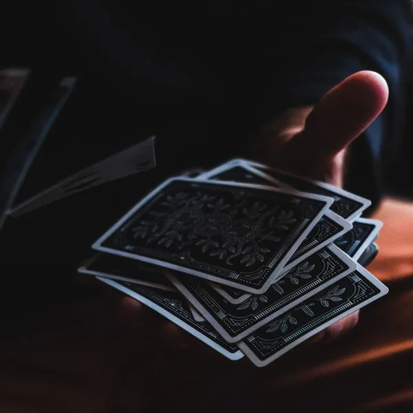
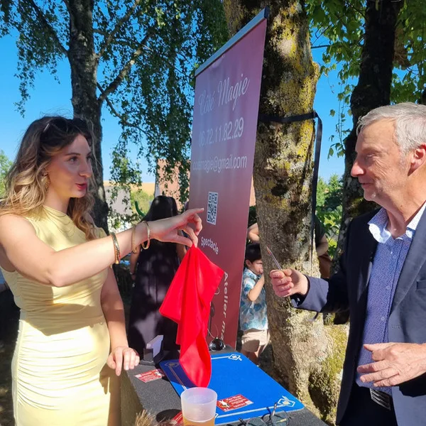
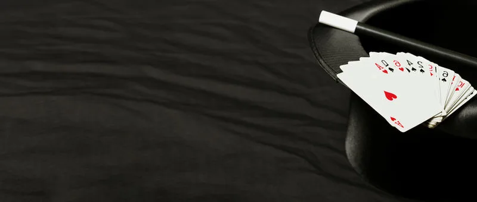
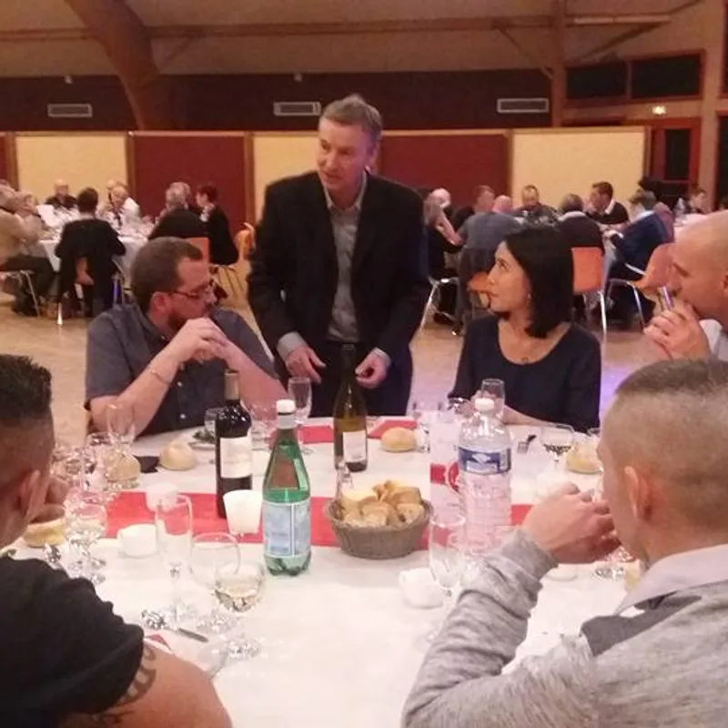

Comment se déroule le close-up lors d'un événement ?
Le close-up, c'est une magie de proximité qui crée une ambiance conviviale, surprenante et bluffante, directement sous les yeux de vos invités. Cartes, pièces et objets du quotidien prennent vie entre vos mains. Francis passe de table en table ou de groupe en groupe, adaptant chaque tour à l'instant présent.
Tout peut se faire en déambulation ou en formule fixe. C'est la magie idéale pour les repas, vins d'honneur, cocktails, soirées d'entreprise, fêtes familiales ou foires. Le close-up peut aussi être accompagné de sculpture sur ballons et d'une partie scénique pour un événement complet.
Basé à Issoudun, Francis intervient régulièrement à Châteauroux, Bourges, Vierzon et dans l'ensemble du Centre-Val de Loire pour des mariages, anniversaires marquants et soirées de gala. La durée s'adapte à votre programme : de 1 h de déambulation pendant le cocktail à 2 h de close-up pendant le dîner.
Idéal pendant un vin d'honneur : Francis passe de groupe en groupe et brise la glace entre les invités, créant des moments de complicité inoubliables.
Pour quelles occasions ?
- Mariages, cocktails et vins d'honneur
- Soirées et séminaires d'entreprise
- Repas de famille et fêtes entre amis
- Anniversaires et fêtes privées
- Foires, salons et événements publics
« Bluffant ! Rencontré lors d'une prestation sur un mariage, nous avons été bluffés par ses talents de magicien. Les tours de magie se font avec humour et bonne humeur. Je recommande pour animer vos soirées ou vos événements. »
— Mélanie Foucher, avis Google
Questions fréquentes sur le close-up
Combien de temps dure le close-up pendant un mariage ?
En général, Francis réalise entre 1 h et 2 h de close-up, principalement pendant le vin d'honneur ou le cocktail. La durée s'adapte au nombre d'invités et au déroulement de votre soirée.
Faut-il prévoir un espace particulier ?
Non, le close-up se pratique directement parmi vos invités, sans installation ni sonorisation. Francis s'adapte à tous les lieux : salle de réception, jardin, restaurant, terrasse.
Peut-on combiner le close-up avec un spectacle ?
Absolument ! La formule la plus demandée pour les mariages combine le close-up pendant le cocktail et un spectacle pendant le repas. Francis vous propose la combinaison idéale selon votre programme.
En images




Autres prestations
Envie de magie pour votre événement ?
Parlez-en à Francis : il vous répond personnellement et établit un devis gratuit sous 24 heures.
Issoudun · Indre · Centre-Val de Loire